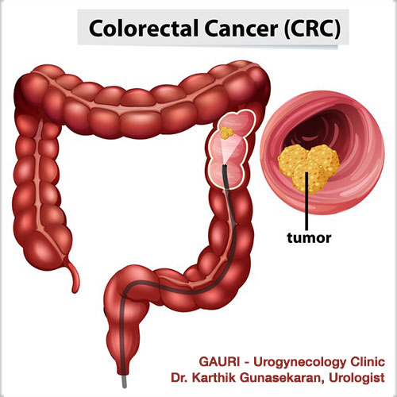
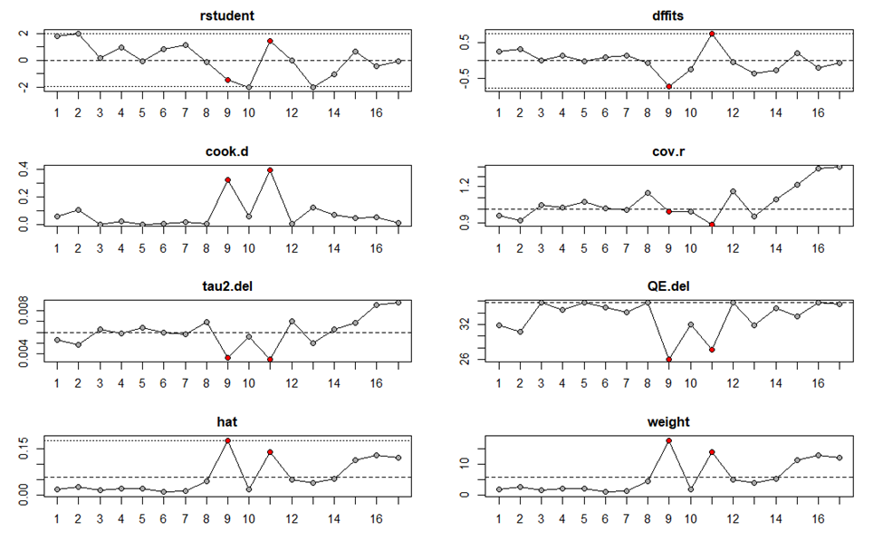

Association Between Red and Processed Meat Consumption and Colorectal Cancer Risk
A Comprehensive Systematic Review and Random-Effects Meta-Analysis of Epidemiological Studies
Colorectal Cancer Pathophysiology & Diagnosis
Anatomical localization, mucosal adenoma-carcinoma sequences, and clinical manifestation.


Executive Summary & Meta-Analysis Dashboard
Quantitative synthesis of 1,379,000 individuals across 17 epidemiological risk estimates.
Global Colorectal Cancer Breakdown by Sex (WHO / IARC GLOBOCAN)
| Epidemiological Metric | Men / Males | Women / Females | Male-to-Female Ratio |
|---|---|---|---|
| Annual New Cases | ~1.07 million | ~857,000 | 1.25 : 1 (Count) |
| Age-Standardized Incidence Rate | 23.6 per 100,000 | 16.3 per 100,000 | 1.45 : 1 (Rate) |
| Annual Deaths | ~499,800 | ~404,200 | 1.24 : 1 (Count) |
| Age-Standardized Mortality Rate | 9.86 per 100,000 | 6.50 per 100,000 | 1.52 : 1 (Rate) |
Background & PICO Problem Formulation
Colorectal cancer (CRC) is a major cause of global oncologic mortality; diet is a key modifiable factor.
Thermal meat processing generates heterocyclic amines (HCAs), polycyclic aromatic hydrocarbons (PAHs), and endogenous N-nitroso compounds (NOCs). Individual prospective cohorts have produced conflicting results, ranging from notable positive risk associations to null associations. This meta-analysis unifies the epidemiological evidence using standardized random-effects modeling.
Population
Adult cohorts from prospective epidemiological studies reporting verified incident Colorectal Cancer (CRC).
Exposure
Highest intake category of red meat (beef, pork, lamb) or combined red and industrially processed meat.
Comparison
Lowest intake category (baseline reference group within each prospective cohort study).
Outcome
Incident colorectal, colon, or rectal cancer quantified as Relative Risk (RR) with 95% Confidence Intervals.
Study Selection Flow (PRISMA 2020)
Systematic database interrogation across PubMed, Scopus, and Web of Science followed dual-screening protocols.
Mathematical Formulation & Analytical Models
Inverse-variance weighting, Restricted Maximum Likelihood (REML), and Hartung–Knapp adjustment.
Log Relative Risk & Variance
Relative risk values and 95% confidence intervals were transformed to log space:
SEi = [ln(Upper) − ln(Lower)] / (2 × 1.96)
vi = SEi²
REML & Hartung-Knapp
Between-study variance was estimated using Restricted Maximum Likelihood with Hartung-Knapp adjustment:
τ² = 0.0060, τ = 0.077
95% Prediction Interval: [0.94, 1.34]
Robustness & Bias Diagnostics
- Small-Study Bias: Funnel plot symmetry, Egger regression & Begg rank tests.
- Influence Diagnostics: Cook's D, studentized residuals, DFFITS, hat values.
- Sensitivity: Iterative leave-one-out meta-analysis runs across all 17 estimates.
Characteristics of 17 Included Estimates
16 prospective studies comprising ~1,379,000 participants and 14,357 incident colorectal cancer cases.
| Study & Year | Country | Sex Stratum | Sample Size | CRC Cases | RR (95% CI) | Weight (Common / Random) |
|---|---|---|---|---|---|---|
| Willett 1990 | USA | Female | 88,751 | 150 | 1.77 [1.09, 2.88] | 0.5% / 1.7% |
| Giovannucci 1994 | USA | Male | 47,949 | 201 | 1.71 [1.15, 2.55] | 0.8% / 2.5% |
| Chen 1998 | USA | Male | 425 | 208 | 1.17 [0.68, 2.02] | 0.4% / 1.4% |
| Singh 1998 | USA | Male + Female | 32,051 | 127 | 1.41 [0.90, 2.21] | 0.6% / 2.0% |
| Pietinen 1999 | Finland | Male | 27,111 | 185 | 1.10 [0.71, 1.71] | 0.6% / 2.1% |
| Jarvinen 2001 | Finland | Male + Female | 9,959 | 109 | 1.50 [0.77, 2.93] | 0.3% / 1.0% |
| Tiemersma 2002 | Netherlands | Male + Female | 639 | 102 | 1.60 [0.89, 2.87] | 0.4% / 1.2% |
| Flood 2003 | USA | Female | 45,496 | 311 | 1.10 [0.83, 1.45] | 1.6% / 4.5% |
| English 2004 | Australia | Male + Female | 37,112 | 452 | 1.03 [0.98, 1.08] | 51.2% / 17.8% |
| Lin 2004 | USA | Female | 37,547 | 202 | 0.66 [0.40, 1.09] | 0.5% / 1.6% |
| Cross 2007 | USA | Male + Female | 494,036 | 5,107 | 1.24 [1.13, 1.37] | 12.8% / 13.9% |
| Kabat 2007 | Canada | Female | 48,666 | 617 | 1.12 [0.86, 1.46] | 1.7% / 4.9% |
| Lee 2009 | China | Female | 73,224 | 394 | 0.80 [0.59, 1.08] | 1.3% / 3.9% |
| Nöthlings 2009 | USA | Male + Female | 2,531 | 1,009 | 0.96 [0.74, 1.24] | 1.9% / 5.2% |
| Cross 2010 | USA | Male + Female | 300,948 | 2,719 | 1.20 [1.05, 1.37] | 7.2% / 11.4% |
| Fung 2010 (men) | USA | Male | 45,490 | 1,032 | 1.08 [0.97, 1.21] | 9.9% / 12.8% |
| Fung 2010 (women) | USA | Female | 87,256 | 1,432 | 1.12 [0.99, 1.26] | 8.3% / 12.0% |
Primary Forest Plot: Random-Effects Meta-Analysis
Study-specific RRs with 95% CIs. Squares reflect random weights; diamonds reflect pooled estimates.
Publication Bias: Funnel Plot & Small-Study Tests
Symmetric scatter around pooled estimate. Formal regression and rank correlation show no significant bias.
z = 0.98 • p = 0.325
Limit estimate b = 0.072 (95% CI: −0.040 to 0.184). Intercept demonstrates no statistically significant asymmetry.
z = 0.66 • p = 0.510
Kendall's tau indicates no significant rank correlation between effect size and standard error.
Sensitivity & Influence Diagnostics (Figure 3)
Studentized residuals, Cook's D, DFFITS, cov.r, tau2.del, QE.del, hat values, and weights across studies 1–17.

Figure 3. Influence diagnostics for the random-effects meta-analysis (REML). Red points identify studies 9 (English 2004) and 11 (Cross 2007).
Top Influential Studies
Weight: 51.2% (common) / 17.8% (random). Hat = 0.178, DFFITS = −0.710. Omitting it raises pooled RR to 1.14 (1.07–1.22) and lowers I² to 23.8%.
Weight: 13.9% (random), Hat = 0.139, DFFITS = 0.754. Omitting it lowers pooled RR to 1.10 (1.03–1.17) and lowers I² to 28.4%.
Leave-One-Out Summary
Pooled RR remained between 1.10 and 1.14 (log-RR 0.094–0.135) and remained statistically significant across all 17 iterations (all p ≤ 0.0043).
Subgroup Syntheses: By Country & By Sex
Stratified random-effects models evaluating geographic differences and sex-specific risk patterns.
| Subgroup | k | RR | 95% CI | I² (%) | τ² | p (between) |
|---|---|---|---|---|---|---|
| BY SEX | ||||||
| Female | 6 | 1.05 | 0.87 – 1.26 | 57.9 | 0.0280 | 0.610 (Q = 0.99, df = 2) |
| Male | 4 | 1.20 | 0.97 – 1.48 | 37.3 | 0.0201 | |
| Male + Female | 7 | 1.15 | 1.03 – 1.28 | 68.1 | 0.0089 | |
| BY COUNTRY | ||||||
| USA | 11 | 1.16 | 1.09 – 1.24 | 45.7 | 0.0023 | 0.0164 (Q = 13.88, df = 5) |
| Finland | 2 | 1.21 | 0.84 – 1.75 | 0.0 | 0 | |
| Netherlands | 1 | 1.60 | 0.89 – 2.87 | — | — | |
| Australia | 1 | 1.03 | 0.98 – 1.08 | — | — | |
| Canada | 1 | 1.12 | 0.86 – 1.46 | — | — | |
| China | 1 | 0.80 | 0.59 – 1.08 | — | — | |
Sex Comparison (p = 0.610)
There was no evidence that the association differed by sex (Q = 0.99, df = 2, p = 0.610). While men had a higher point estimate (RR 1.20 vs 1.05), confidence intervals overlapped.
Country Differences (p = 0.0164, Exploratory)
The association was clearest in US cohorts (RR 1.16, 95% CI 1.09–1.24). Because four of the six national groups contain only a single study, this result should be interpreted with caution.
Meta-Regression: Publication Year & Sample Size
Univariable and multivariable models (REML) for log relative risk exploring sources of heterogeneity.
| Model | Moderator | β (SE) | p-value | R² / Residual I² |
|---|---|---|---|---|
| Year | Publication Year | −0.0180 (0.0083) | 0.031 | 0% / 53.7% |
| Sample Size | log(Sample size) | 0.0327 (0.0193) | 0.090 | 68.8% / 18.5% |
| Year + Sample Size | Publication Year | −0.0195 (0.0080) | 0.015 | 4.7% / 38.2% (QM = 6.83, p = 0.033) |
| log(Sample size) | 0.0391 (0.0241) | 0.105 |
Temporal Effect Attenuation
Publication year was significantly and inversely associated with effect size (β = −0.0180 per year, p = 0.031).
This corresponds to an approximately 16% lower RR per decade of study publication: exp(−0.18) ≈ 0.84. Earlier studies reported stronger associations than more recent cohorts.
- Improved confounder control in modern studies (smoking, calories, physical activity, endoscopy screening).
- More comprehensive food frequency questionnaires with repeat measurement.
- Decreased intake contrast between highest and lowest intake categories over calendar time.
Discussion: Carcinogenic Mechanisms
Biochemical and toxicological pathways supporting the observed 12% elevated CRC risk.
Heme Iron Catalysis
Organic heme iron stimulates mucosal lipid peroxidation and catalyzes endogenous synthesis of cytotoxic aldehydes and fecal water components in the colon.
N-Nitroso Compounds (NOCs)
Nitrates and nitrites in processed meats react with dietary secondary amines to form DNA-alkylating NOCs, promoting G→A transition mutations in colorectal tissue.
Thermal Mutagens (HCAs & PAHs)
High-temperature grilling and frying generate heterocyclic amines and polycyclic aromatic hydrocarbons requiring cytochrome P450 activation to form DNA adducts.
Methodological Strengths & Study Limitations
Synthesis of findings and inherent constraints highlighted in the meta-analysis report.
Methodological Strengths
- Large Evidence Base: ~1,379,000 participants and 14,357 verified incident CRC cases across 16 prospective cohorts.
- Metric Standardization: Restricted to relative risk ratios (highest vs lowest category) for consistency.
- Hartung-Knapp Adjustment: Controls for small-sample inflation of error rates under moderate heterogeneity.
- Leave-One-Out Stability: The association remained statistically significant across all 17 leave-one-out iterations (p ≤ 0.0043).
Inherent Limitations
- Exposure Metric Differences: Units and intake contrasts varied across original studies (g/day, servings/day, times/week).
- Exposure Aggregation: Red meat and combined red/processed meat were pooled together.
- Cohort Overlap: Cross 2007 and Cross 2010 both derive from the NIH-AARP cohort, representing potential overlap.
- Prediction Interval: 95% PI (0.94–1.34) includes 1.00, meaning that in a new setting the true association could be null or modestly positive.
Conclusion & Public Health Recommendations
Summary of findings and clinical translation for cancer prevention.
Summary of Findings
Across 17 prospective estimates, higher red/processed meat consumption was associated with a modest 12% increase in colorectal cancer risk (RR 1.12, 95% CI 1.03–1.22), with moderate heterogeneity (I² = 55.3%). The result was robust to the omission of any single study and showed no statistical evidence of publication bias.
Aligns with WCRF / IARC recommendations to restrict red meat intake to ≤350–500g/week and minimize processed meat consumption.
Encourage replacing red and processed meats with legumes, poultry, fish, and dietary fiber to reduce colonic exposure to heme iron and NOCs.
Continuous dose-response meta-analyses per 100g/day increments and gut microbiome metabolomic interactions are needed.
Thank You
Group 6 • Questions & Discussion